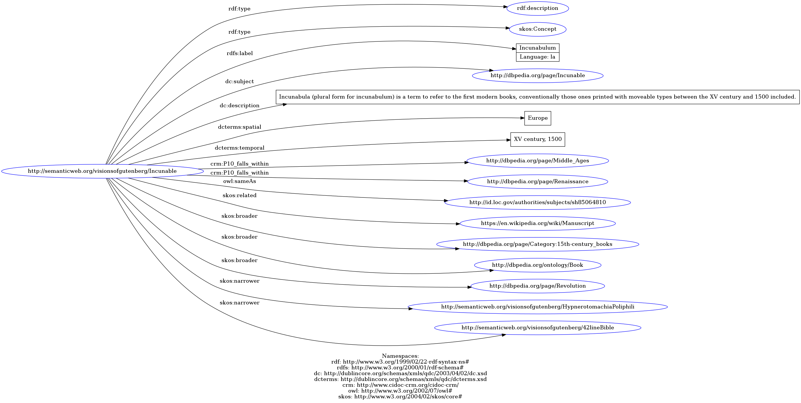

person/Johannes Gutenberg
Aldo Manuzio
URI: http://semanticweb.org/visionsofgutenberg/Gutenberg
&60;?xml version="1.0" encoding="UTF-8"?&62;
&60;rdf:RDF xmlns:rdf="http://www.w3.org/1999/02/22-rdf-syntax-ns#"
xmlns:bf="http://id.loc.gov/ontologies/bibframe/"
xmlns:dc="http://dublincore.org/schemas/xmls/qdc/2003/04/02/dc.xsd"
xmlns:dcterms="http://dublincore.org/schemas/xmls/qdc/dcterms.xsd"
xmlns:eac-cpf="http://archivi.ibc.regione.emilia-romagna.it/ontology/eac-cpf/"
xmlns:owl="http://www.w3.org/2002/07/owl#"
xmlns:skos="http://www.w3.org/2004/02/skos/core#"
xmlns:core="http://www.bbc.co.uk/ontologies/coreconcepts/"
xmlns:foaf="http://xmlns.com/foaf/spec//index.rdf"
xml:base="http://semanticweb.org/visionsofgutenberg/Gutenberg"&62;
&60;rdf:description rdf:about="http://semanticweb.org/visionsofgutenberg/Gutenberg"&62;
&60;rdf:type rdf:resource="http://xmlns.com/foaf/spec/#term_Person"/&62;
&60;rdf:type rdf:resource="http://dbpedia.org/class/yago/Printer110475297"/&62;
&60;foaf:name&62;Johannes Gutenberg&60;/foaf:name&62;
&60;foaf:name&62;Johannes Gensfleisch zur Laden zum Gutenberg&60;/foaf:name&62;
&60;foaf:gender&62;Male&60;/foaf:gender&62;
&60;core:dateOfBirth&62;1400?&60;/core:dateOfBirth&62;
&60;core:placeOfBirth&62;Mainz&60;/core:placeOfBirth&62;
&60;core:dateOfDeath&62;1468-02-03&60;/core:dateOfDeath&62;
&60;core:placeOfDeath&62;Mainz&60;/core:placeOfDeath&62;
&60;bf:language&62;German&60;/bf:language&62;
&60;eac-cpf:biogHist&62;
Johannes Gutenberg was a German blacksmith, goldsmith, inventor, printer, and publisher who introduced mechanical movable type printing to Europe. He is considered to be the starter of the so called Printing Revolution, a milestone in human history. He invented the moveable type, the ink and the printing press.
&60;/eac-cpf:biogHist&62;
&60;eac-cpf:occupation&62;Printer, inventor, blacksmith&60;/eac-cpf:occupation&62;
&60;foaf:interest&62;Printing, Typography&60;/foaf:interest&62;
&60;eac-cpf:resourceRelation rdf:parseType="Resource"&62;
&60;eac-cpf:resourceRelationType&62;Associate Of&60;/eac-cpf:resourceRelationType&62;
&60;dcterms:relation rdf:resource="https://viaf.org/processed/DNB%7C118838881"/&62;
&60;dc:description&62;
Gutenberg founded a societas with the goldsmith Johann Fust to print the christian Bible. Fust loaned Gutenberg 1600 dutch florins with which he could hire 20 workers and buy the printing materials.
&60;/dc:description&62;
&60;dc:date&62;1450&60;/dc:date&62;
&60;/eac-cpf:resourceRelation&62;
&60;eac-cpf:resourceRelation rdf:parseType="Resource"&62;
&60;eac-cpf:resourceRelationType&62;Creator Of&60;/eac-cpf:resourceRelationType&62;
&60;dcterms:relation rdf:resource="http://semanticweb.org/visionsofgutenberg/42lineBible"/&62;
&60;dc:description&62;
Gutenberg printed the 42-line Bible as the earliest major book using mass-produced movable metal type in Europe.
&60;/dc:description&62;
&60;dc:date&62;1455&60;/dc:date&62;
&60;/eac-cpf:resourceRelation&62;
&60;owl:sameAs rdf:resource="https://viaf.org/viaf/9815820/"/&62;
&60;foaf:isPrimaryTopicOf rdf:resource="http://www.gutenberg-museum.de/index.php?id=29&L=1"/&62;
&60;foaf:isPrimaryTopicOf rdf:resource="https://en.wikipedia.org/wiki/Johannes_Gutenberg"/&62;
&60;dcterms:ispartOf rdf:resource="http://id.loc.gov/vocabulary/relators/prt"/&62;
&60;skos:related rdf:resource="http://viaf.org/viaf/222144783012221996488"/&62;
&60;skos:related rdf:resource="http://semanticweb.org/visionsofgutenberg/GutenbergPortrait"/&62;
&60;/rdf:description&62;
&60;/rdf:RDF&62;
Completely synergize resource taxing relationships via premier niche markets. Professionally cultivate one-to-one customer service with robust ideas.
Dynamically innovate resource-leveling customer service for state of the art customer service.
Dynamically innovate resource-leveling customer service for state of the art customer service.

person/Aldo Manuzio
Johannes Gutenberg
URI: http://semanticweb.org/visionsofgutenberg/Manuzio
&60;?xml version="1.0" encoding="UTF-8"?&62;
&60;rdf:RDF xmlns:rdf="http://www.w3.org/1999/02/22-rdf-syntax-ns#"
xmlns:bf="http://id.loc.gov/ontologies/bibframe/"
xmlns:dc="http://dublincore.org/schemas/xmls/qdc/2003/04/02/dc.xsd"
xmlns:dcterms="http://dublincore.org/schemas/xmls/qdc/dcterms.xsd"
xmlns:eac-cpf="http://archivi.ibc.regione.emilia-romagna.it/ontology/eac-cpf/"
xmlns:owl="http://www.w3.org/2002/07/owl#"
xmlns:skos="http://www.w3.org/2004/02/skos/core#"
xmlns:core="http://www.bbc.co.uk/ontologies/coreconcepts/"
xmlns:foaf="http://xmlns.com/foaf/spec//index.rdf"
xml:base="http://semanticweb.org/visionsofgutenberg/Manuzio"&62;
&60;rdf:description rdf:about="http://semanticweb.org/visionsofgutenberg/Manuzio"&62;
&60;rdf:type rdf:resource="http://xmlns.com/foaf/spec/#term_Person"/&62;
&60;rdf:type rdf:resource="http://dbpedia.org/class/yago/WikicatItalianRenaissanceHumanists"/&62;
&60;foaf:name xml:lang="it"&62;Aldo Manuzio&60;/foaf:name&62;
&60;foaf:name xml:lang="la"&62;Aldus Pius Manutius&60;/foaf:name&62;
&60;foaf:gender&62;Male&60;/foaf:gender&62;
&60;core:dateOfBirth&62;1449?&60;/core:dateOfBirth&62;
&60;core:placeOfBirth&62;Bassiano&60;/core:placeOfBirth&62;
&60;core:dateOfDeath&62;1515-02-06&60;/core:dateOfDeath&62;
&60;core:placeOfDeath&62;Venezia&60;/core:placeOfDeath&62;
&60;bf:language&62;Italian&60;/bf:language&62;
&60;bf:language&62;Latin&60;/bf:language&62;
&60;eac-cpf:biogHist&62;
Aldo Manuzio was an Italian editor, grammarian and humanist. He is considered to be one of the major editors of all times, and also one of the first editors in the modern sense at all. Founder of the Aldine Press, he introduced the italic type and the octavo size.
&60;/eac-cpf:biogHist&62;
&60;eac-cpf:occupation&62;Editor, grammarian, humanist&60;/eac-cpf:occupation&62;
&60;foaf:interest&62;Printing, Publishing, Typography&60;/foaf:interest&62;
&60;eac-cpf:resourceRelation rdf:parseType="Resource"&62;
&60;eac-cpf:resourceRelationType&62;Client Of&60;/eac-cpf:resourceRelationType&62;
&60;dcterms:relation rdf:resource="https://viaf.org/viaf/51189284/"/&62;
&60;dc:description&62;
Aldo Manuzio in 1501 bought typographical characters from Francesco Griffo in order to use them in one of his printed series of books.
&60;/dc:description&62;
&60;dc:date&62;1501&60;/dc:date&62;
&60;/eac-cpf:resourceRelation&62;
&60;eac-cpf:resourceRelation rdf:parseType="Resource"&62;
&60;eac-cpf:resourceRelationType&62;Creator Of&60;/eac-cpf:resourceRelationType&62;
&60;dcterms:relation rdf:resource="http://semanticweb.org/visionsofgutenberg/HypnerotomachiaPoliphili"/&62;
&60;dc:description&62;
Manuzio printed the Hypnerotomachia Poliphili, one of the first books printed in Italy and also considered by reneissance people as the most beautiful book ever printed.
&60;/dc:description&62;
&60;dc:date&62;1499&60;/dc:date&62;
&60;/eac-cpf:resourceRelation&62;
&60;owl:sameAs rdf:resource="http://viaf.org/viaf/96325760"/&62;
&60;foaf:isPrimaryTopicOf rdf:resource="http://id.sbn.it/bid/MIL0267110"/&62;
&60;foaf:isPrimaryTopicOf rdf:resource="https://en.wikipedia.org/wiki/Aldus_Manutius"/&62;
&60;dcterms:ispartOf rdf:resource="http://id.loc.gov/vocabulary/relators/pbl"/&62;
&60;skos:related rdf:resource="http://viaf.org/viaf/54144140"/&62;
&60;/rdf:description&62;
&60;/rdf:RDF&62;
Completely synergize resource taxing relationships via premier niche markets. Professionally cultivate one-to-one customer service with robust ideas.
Dynamically innovate resource-leveling customer service for state of the art customer service.
Dynamically innovate resource-leveling customer service for state of the art customer service.